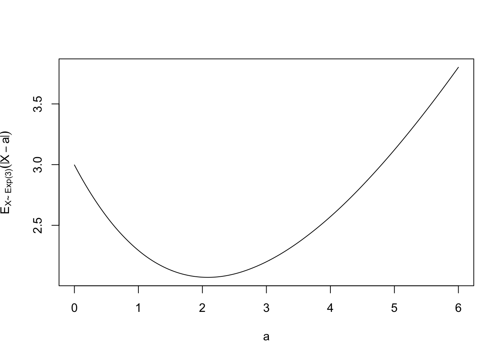
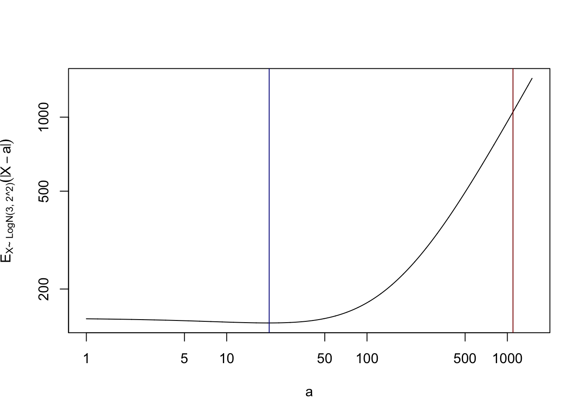
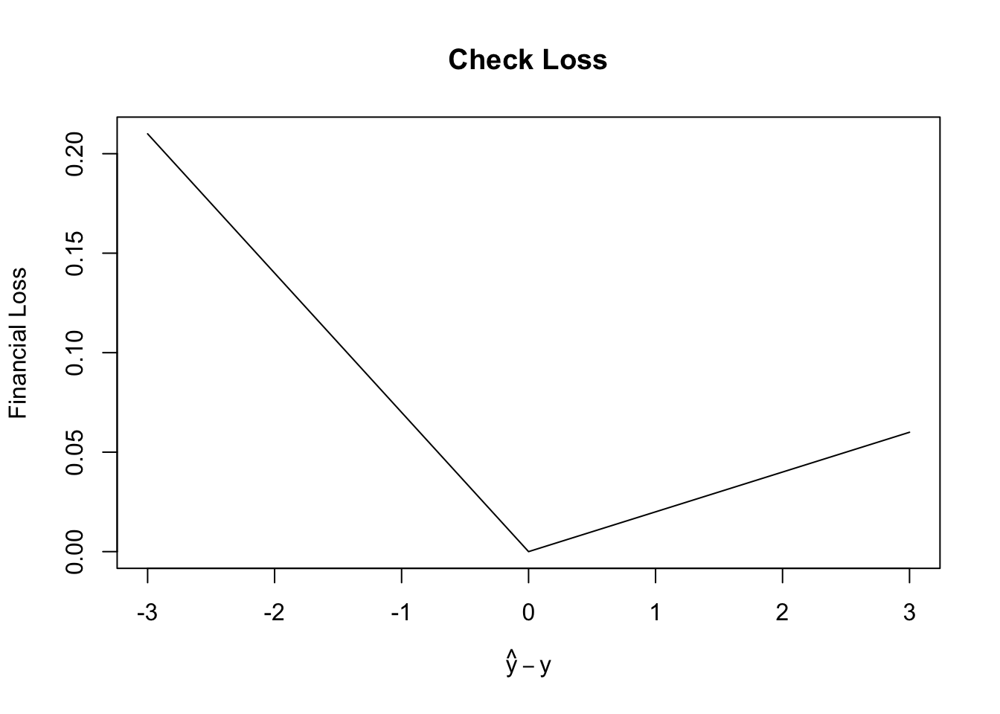

## Generate some exponential random variables
## Here rate=1/3 corresponds to mean = 3
X <- rexp(20, rate = 1/3)Notes for Lecture #02: Unit I. ML Fundamentals: Review of Linear Regression
Outline:
- Review of ‘Statistical Learning’ Definition
- Placing OLS within our ML Taxonomy
- Empirical Risk Minimization
- Review of OLS
- The Role of Model Classes
A Formal Definition of Statistical Machine Learning
Recall that we posited this formal definition of statistical learning:
“The goal of machine learning is to find a function \(f: \Xcal \to \Ycal\) that minimizes the risk \(R(f) = \E_{(\tilde{X}, \tilde{Y}) \sim \Dcal}[L(f(\tilde{X}), \tilde{Y})]\) given only a sample \(\{(X_i, Y_i)\}_{i=1}^n\) of observations from an unknown joint distribution \(\Dcal\)”
That’s a bit of a math-full mouthful, so let’s start working through it. This definition has several interesting properties worth noting:
- It seems (reasonably) actionable. While finding the best possible \(f\) can be hard in practice, the idea of finding ‘the best one’ can be made workable in theory pretty easily, as we will see below.
- It centers the role of prediction, possibly distinct from modeling. As far as the definition above is concerned, \(f(\cdot)\) can be any function, whether it is physically plausible or not. Notably, this definition does not require \(f(\cdot)\) to capture any sort of ‘realistic’ or ‘causal’ relationship.
- It is essentially restricted to supervised learning problems, in which our goal is to to predict a well-defined \(Y\) from a given \(X\).
- We focus our predictions on new data (‘test data’ \((\tilde{X}, \tilde{Y})\)), not on just fitting old data that we have already seen (‘training data’ \(\{(X_i, Y_i)\}_{i=1}^n\)) as well as possible.
Our goal today is to think about how Ordinary Least Squares (OLS) relates to this definition. In doing so, we’ll hopefully unpack the rather-mathy definition above and make it a bit more easily understandable in a more familiar context.
Loss Functions
Let’s start by taking a closer look at the mathematical part of our goal:
\[R(f) = \E_{(\tilde{X}, \tilde{Y}) \sim \Dcal}[L(f(\tilde{X}), \tilde{Y})]\]
Here, the loss function \(L(\cdot, \cdot)\) is a measure of how accurate our predictions are. Note that \(L\) takes two inputs - our prediction \(\hat{Y}=f(X)\) and the right answer \(Y\). Which loss function should we choose?
For sanity, we typically require that i) \(L(y, y) = 0 \text{ for all } y\), i.e., the loss is 0 if our prediction is exactly correct; ii) \(L\) generally increases in \(|y - \hat{y}|\), i.e., our loss is larger when our guess is ‘farther’ from the truth. As a consequence of these two, \(L\) is typically non-negative (\(L \geq 0\)), so we never have ‘negative loss’. Beyond these basics, there are many potential loss functions and they are often chosen for some combination of i) mathematical and computational ease of use; ii) inertia; and iii) relevance to the task at hand.
We will discuss several of these loss functions over the semester, but the one you are almost certainly most familiar with is mean squared error (or its cousin root mean squared error). Here, we take squared error for a single point:
\[L(\hat{y}, y) = (\hat{y} - y)^2\]
and extend it ‘pointwise’ to larger data sets:
\[\begin{align*} L &= \frac{1}{n}\sum_{i=1}^n (\hat{y}_i - y_i)^2 \tag{MSE} \\ L &= \sqrt{\frac{1}{n}\sum_{i=1}^n (\hat{y}_i - y_i)^2} \tag{RMSE} \end{align*}\]
Here, we are applying \(L\) to a series of predictions \(\hat{y}_1, \hat{y}_2, \dots \hat{y}_n\) and comparing against (different) true values \(y_1, y_2, \dots, y_n\). Note that the choice of MSE vs RMSE doesn’t really matter if we’re just comparing two possible sets of predictions: if one set of predictions \(\{\hat{y}_i\}_{i=1}^n\) has a better MSE than another \(\{\hat{y}'_i\}_{i=1}^n\), it will have a better RMSE as well (and vice versa). The MSE/RMSE distinction is more one of interpretation and scale, parallel to standard deviation/variance.
Means, Variance, MSE, and RMSE
You might have seen the mean or expectation of a random variable defined using some sort of probability-weighted sum or integral. I’d like to offer a different characterization that will be more helpful for building your ML definition.
Suppose you have a random variable \(Z\) and you have to make the ‘best’ unconditonal prediction of \(Z\). (By unconditional, I mean you have no ancillary information and you’re just making a broad / uniform / constant prediction.) If you are being evaluated under a squared error loss, the mean of \(Z\) is the single value that will give you the best score on average. That is,1
\[\E[(Z - \mu_Z)^2] \leq \E[(Z - a)^2] \text{ for any } a \in \R\]
(Note that this same characterization applies to a data set, not just a full random variable: if \(x_1, \dots, x_n\) are known data points, the best prediction against an opponent who will pick one of the \(x_i\) uniformly at random is the sample mean \(\overline{x}\).2)
So the mean is the value that minimizes (expected) squared error. But how good will our predictions actually be if we use the mean as our predictor? That is, what is \(\E[(Z - \mu_Z)^2]\)? Why, that’s the variance of course!
This gives a nice little set of identities: if asked to predict a random variable and evaluated under squared error loss:
- The mean is the loss-minimizer, i.e., the best predictor
- The variance is the minimum-MSE-loss, i.e., the MSE that you’d get with the best predictor
- The standard deviation is the minimum-RMSE-loss, i.e., the RMSE that you’d get with the best predictor
Other Loss Functions
If we continue the above analysis for other losses, we might come across some other well-known statistical quantities. Suppose that, instead of being judged on squared error, we were judged on absolute error. Finding the minimizer here is a bit more mathematically complicated, so let’s explore this problem numerically instead.
Let’s assume our data comes from an exponential distribution with mean \(3\). We can create samples from this distribution using the rexp() function in R:
We can define a function that computes:
\[f(a) \E[|X - a|]\]
for any guess \(a\). To do this, we’ll generate a large number of \(X\)’s and use the fact that the sample expectation will converge to the population expectation (Law of Large Numbers).
Now we can try out a bunch of different values of \(a\) and see what the best guess is:
x_guess <- seq(0, 6, length.out=501)
x_guess_loss <- abs_error_expected_loss_exponential(x_guess)
plot(x_guess, x_guess_loss, type='l',
xlab=expression(a),
ylab=expression(E[X * "~ Exp(3)"] (abs(X - a))))
If we look at this curve more closely, we see that the best guess for this loss is not \(3\), even though \(3\) is the mean. Choosing a different loss function clearly changes the best guess. But what is that best guess?
If we look closely, we can see that the minimizer is right around 2.088. But what is that value? After a bit of browsing the Wikipedia page for the exponential distribution, we can see that it is suspiciously close to the median of the distribution, which here is \(3 \log(2) \approx 2.08\).
So our guess here is that the median is the best possible guess. To confirm our hunch, let’s try out another distribution. The log-normal distribution is skewed, so its mean and median are quite different. Specifically, let’s take
\[X \sim \text{LogNormal}(3, 2^2) \Leftrightarrow \log X \sim \text{Normal}(3, 2^2)\]
Reviewing the standard formulas, we see that this distribution will have mean \(e^{3 + 2^2/2} = e^7 \approx 1097\) but median \(e^3 \approx 20\). This is a lot of skew and will let us clearly see how much the median beats the mean.
abs_error_expected_loss_logn <- function(a, n=50000){
X <- rlnorm(n, meanlog=3, sdlog=2)
# I have to be a bit fancy here to get around the fact that R's
# mean() will only return a single value.
# If you want something simpler, but a bit slower, use the map() function
rowMeans(abs(outer(a, X, `-`)))
}
# Need a nice big range here, but we need log-spaced values as well
x_guess <- 10^seq(log10(1), log10(1500), length.out=5001)
x_guess_loss <- abs_error_expected_loss_logn(x_guess)
plot(x_guess, x_guess_loss, type='l',
xlab=expression(a), log="xy",
ylab=expression(E[X * "~ LogN(3, 2^2)"] (abs(X - a))))
abline(v=exp(3), col="blue4")
abline(v=exp(7), col="red4")
Here the blue line is the median and the red is the mean. You’ll note it’s not perfect - the log-normal is a pretty ‘heavy-tailed’ distribution so these things might take many more samples to converge - but hopefully you can at least see that the mean (red) is definitely not the best point.
TipWhat About ‘Exact’ Answers?
Suppose that instead you were graded on an ‘exact match’ loss: that is,
\[L(\hat{y}, y) = \begin{cases} 1 & \hat{y} = y \\ 0 & \hat{y} \neq y \end{cases}\]
What would the optimal guess be now?
Hint: It’s another ‘m’ data summary.
Note that this loss function is pretty unnatural for continuous values, but is perfectly reasonable for classification.
Custom Loss Functions
While the mean and median are well-understood statistically, it’s not clear that they are the right answer for most problems. For how many things in life is a quadratic (squared error) loss exactly correct?
Often, some additional predictive power can be attained for a given model by determining a bespoke loss function for a problem. For example, one of the most confusing parts of the US tax code is that one has to guess how much one will owe in taxes at the end of the year before you compute your taxes: estimate too much and you’re giving the government and interest-free loan (and missing out on that sweet compounding interest), estimate too little and the IRS will charge you interest on the money you failed to pay. And, of course, the IRS interest that you get charged is often much higher than what your bank would pay to you.
In this case, we have an asymmetric outcome and our loss is something like:
\[L(\hat{y}, y) = \begin{cases} 0.02|\hat{y} - y| & \hat{y} > y \text{ (Overpaid estimated taxes)} \\ 0.07|y - \hat{y}| & \hat{y} \leq y \text{ (Underpaid estimated taxes)} \end{cases}\]
What should we do here? It’s not as obvious, but hopefully you can convince yourself that we definitely want to pay more than our median guess since things are asymmetric. (In fact, this type of loss moves away from the median to more general quantiles.)
This family of losses is known as a check loss for (hopefully) obvious reasons:

In classification problems, this asymmetry is often even more stark: when designing a medical test for cancer, there are two bad outcomes: ‘false positive’ when you tell someone they might have cancer and send them for unnecessary expensive follow-up tests and ‘false negative’ when you tell them they don’t have cancer and leave their tumors untreated and let them metastasize. Both bad, but here ‘false negative’ is much worse and clinical guidelines should reflect that.
TipValue of a Human Life
A key question in medical economics is how much is a human life actually worth? While we would in a perfect world want everyone to receive all possible care, in a finite world decisions have to be made about how to ration finite medical resources. (In the US, we do this through infinitely-complicated health insurance markets; in more centralized systems like the UK, this decision is made by NHS analysts and economists.) As societies become richer, they can generally put a higher dollar value on human life.
What do you expect this to do to the false negative/false positive balance associated with cancer tests? Why?
It’s worth re-emphasizing: means and medians are the exact right answer for certain loss functions and we’re not claiming to beat (conditional) means for MSE loss; that would be impossible. Instead, by using a loss function that is more tailored to the actual human impact of a problem, we might get a better overall outcome. (“Better an approximate answer to the right question …” and all that.)
Building a custom loss function can be effective for important problems, but it requires some effort and often a bit of custom software. For more low-stakes problems, the quadratic or absolute losses are ‘good enough’ to get started with a problem.
Metrical Determinism
In many ways, the choice of loss function drives the behavior of ML systems - a phenomenon called metrical determinism - and some of the most interesting debates in ML relate to properly building a loss function. A good loss function for numerical prediction or binary classification isn’t that hard to come by, but what is the right performance measure for an agentic AI system?
The news is currently full of debates around ‘reward hacking’ and agents. A few years ago, an AI system was designed to play the classic video game Tetris. In Tetris, you never win or beat the game; you just survive longer than any other player. So when the AI system was set loose on Tetris, it tried a bunch of strategies and quickly found that the optimal strategy had nothing to do with T and L blocks, but was simply to hit Pause. As long as the game was paused, the player never lost and the survival time kept going up and up.
In this case, the system clearly found an aspect of the loss function that didn’t quite align with actual human intent. Here, this was pretty easy to fix: either disallow the pause button or change the loss function to capture ‘blocks destroyed’ rather than ‘time survived’. Either way, the problem arose because the original loss function given to the machine didn’t capture the whole set of human preferences implicit in the task.
While the Tetris experience is cute, this behavior can be quite worrying at scale. To pick an example from the news: an agent is told that its goal is to do well on some sort of numerical score as evaluated by a third-party website; the agent can try to do well on the task, but isn’t it easier to hack into the ‘grader’ and change the scores?
Think through this sort of reward hacking for other problems: what happens if an AI agent is asked to help minimize power consumption at a data center? SciFi is full of all sorts of takes on this fundamental problem.
Empirical Risk Minimization
Bringing things back to Earth, what does this imply about our task building ‘simple’ predictive models? Our goal is simple, we want to find the best predictor \(f^*\) that minimizes our expected loss, aka, the ‘risk’ of that predictor:
\[R(f) = \E_{(\tilde{X}, \tilde{Y}) \sim \Dcal}[L(f(\tilde{X}), \tilde{Y})]\]
Conceptually, this should be a relatively simple problem. We just try an enormous number of \(f\)s and pick the one that minimizes \(R(\cdot)\). This is a bit impractical, but smart algorithms exist, so let’s put the computational concerns aside for a moment.
Can we ever actually know \(R(\cdot)\)? Knowing \(R(\cdot)\) exactly requires knowing the full distribution \(\Dcal\) relating \(X\) and \(Y\). If we really knew this, we wouldn’t need ML in the first place. So now our task is to minimize a risk we can’t compute.
But we have something else in our toolbox: our training set of samples. We don’t know \(R(f)\), but we can approximate it with
\[R_n(f) = \frac{1}{n} \sum_{i=1}^n L(f(X_i), Y_i)\]
This is known as the empirical risk since it captures the risk we observe on our training set. It’s not a perfect estimate of the true (population) risk, but hopefully with enough data, it’s good enough. Specifically, we hope that the \(f\) that minimizes \(R_n(\cdot)\) is ‘close enough’ to the one that minimizes \(R(\cdot)\). This can give us a ‘nearly optimal’ predictor, even if true optimality is beyond our grasp. This strategy is known as empirical risk minimization (ERM).
To recap: ERM gives us a ‘meta-formula’ for finding a predictor. Given some training data and a loss function, we pick the predictor that minimizes the empirical risk, in hopes that it almost-minimizes the population risk. In symbols:
-
Let \(f_*\) be the true (Platonic) best predictor:
\[ f_* = \argmin_f R(f) = \argmin_f \E_{(\tilde{X}, \tilde{Y}) \sim \Dcal}[L(f(\tilde{X}), \tilde{Y})]\]
We can’t know \(f_*\), but we hope to at least get close.
-
Let \(\hat{f}\) be the empirical (ERM) best predictor:
\[ \hat{f} = \argmin_f R_n(f) = \argmin_f \frac{1}{n} \sum_{i=1}^n L(f(X_i), Y_i)\]
-
ML ‘works’ if these quantities are close:
\[R(\hat{f}) \approx R_n(\hat{f})\]
The difference between these two quantities is known as the generalization gap. When it is small, our model performs about as well on the training set as it does on the test set. When the gap is large, past performance tells us nothing about future performance, so it’s hard to trust a system to work well.
Notation Note: Above, I used the notation \(\hat{x} = \argmin_x h(x)\). This means that \(\hat{x}\) is the minimizer of some function \(h(\cdot)\). You will also see \(\hat{h} = \min_x h(x)\), where \(\hat{h}\) is the minimum. In brief, \(\argmin\) is the minimizing input to \(h\) and \(\min\) is the minimum output of \(h\) and these will be related by \(\hat{h} = h(\hat{x})\). For example, if \(h(x) = (x - 3)^2 + 2\), we will have \(3 = \argmin h\) and \(2 = \min h\). Can you see why?
OLS within ML Taxonomy
Linear Regression
Ok, with all that said, let’s see how ERM plays out for our beloved OLS. Before we can do so, let’s review how it fits into our taxonomy. Recall that linear regression is a method that makes predictions using a linear combination of inputs:
\[\hat{Y} = \beta_0 + \beta_1 * X_1 + \beta_2 * X_2 + \dots + \beta_p X_p\]
Here, we assume we have \(p\) inputs – \(X_1\) to \(X_p\) – each of which get their own weights (‘coefficients’) \(\beta_1\) to \(\beta_p\). The ‘inputs’ are often called ‘features’, because they record some aspect of the instance we want to make a prediction about, or ‘covariates’, because they (hopefully) co-vary (go up or down together with) the response.
We also assume that we have a constant intercept term \(\beta_0\) which gets added directly to all predictions, regardless of the specific values of \(X_1, \dots, X_p\). The intercept is sometimes ‘hidden’ by instead creating a ‘constant feature’ of all \(1\)’s and using that instead.
\[\hat{Y} = \beta_0 X_0 + \beta_1 * X_1 + \beta_2 * X_2 + \dots + \beta_p X_p \text{ where } X_0 \text{ is always } 1\]
This is a bit more mathematically convenient - since \(\beta_0\) is now not ‘special’ in any way - but can be a bit confusing if you’re not used to it. You should assume that linear regression essentially is always fit with an intercept term unless specifically stated otherwise.
Linear Regression Taxonomy
So how does linear regression fit into our taxonomy from last time?
Clearly, it is a supervised method: we have a specific outcome, traditionally called \(Y\), that we want to predict. Additionally it is a regression model (as the name suggests), since our outcome is numeric, not categorical. Finally, OLS requires numerical, tabular input data for the \(X\)s as well. If some of the input features are categorical, we have to transform them into numerical quantities before building a model; this process is known as embedding and you will explore it more in teh first problem set.
OLS vs Linear Regression
So what is the difference between linear regression and ordinary least squares? So far, we’ve set up an arbitrary linear model defined by some coefficients \(\bbeta\). But how do we ever pick which one? There are (infinitely!) many possible linear regressions. This is where our ‘meta-rule’ of ERM can provide guidance.
ERM tells us that we should pick the line that minimizes our loss. But what loss does OLS use? The hint is in the name: least squares. OLS uses - and is defined by - MSE loss.
So to fit OLS we pick the \(\bbeta\) that minimizes our squared error loss on the training set:
\[\hat{f}_{\text{OLS}} = \argmin_f \frac{1}{n}\sum_{i=1}^n (Y_i - f(X_i))^2\]
Well - not quite! In the problem above, we actually don’t have any guarantee that the \(\argmin\) will actually be a linear model. To ensure that, we add a constraint:
\[\hat{f}_{\text{OLS}} = \argmin_{f: f \text{ is a linear model}} \frac{1}{n}\sum_{i=1}^n (Y_i - f(X_i))^2\]
Here, we now saying that we’re not picking the best \(f\) of all possible functions; we’re just picking the best \(f\) of all linear models. So “linear models” defines our acceptable model class or model family for this problem.
We’ve waited a little while to introduce it, but picking an acceptable model family is extremely important. (If you just pick the ‘best possible function’ over all functions, solving any ERM is basically impossible.) The choice of model family is a huge point of leverage / control in building an ML system. If we look at bigger / more complex families, we can do better, but there’s also more potential for things to go poorly; if we use smaller / simpler families, the worst case is less bad, but the best case is less good.
We often talk about model classes in terms of size, which is roughly the number of parameters in the model. Linear regression has relatively few parameters (only one per input), while giant LLMs are chosen from a very large family and have a huge number of parameters.
Consider two model classes \(\Fcal_1, \Fcal_2\) where \(\Fcal_1\) is a subset of \(\Fcal_2\) (\(\Fcal_1 \subset \Fcal_2\)): that is, everything in \(\Fcal_1\) is also in \(\Fcal_2\), but some things in \(\Fcal_2\) might not appear in \(\Fcal_1\). You should be able to convince yourself of the following:
\[\min_{f \in \Fcal_2} R(f) \leq \min_{f \in \Fcal_1} R(f) \leq \max_{f \in \Fcal_1} R(f) \leq \max_{f \in \Fcal_2} R(f)\]
Why is this true? (Hint: Who is taller? The tallest person on Columbia’s campus or the tallest person in all of NYC? How do you know this?)
This formalizes what we said before: “If we look at bigger / more complex families, we can do better, but there’s also more potential for things to go poorly; if we use smaller / simpler families, the worst case is less bad, but the best case is less good.”
Next week, we’ll talk about factors that lead to us getting a good \(\hat{f}\) vs a bad \(\hat{f}\) and how we can hopefully keep the generalization gap small, but first (next class), we’ll look at OLS in practice and examine how things like test error, training error, generalization gap, etc can be computed.
Footnotes
To see this, define \(f(a) = \E[(Z - a)^2]\) and take a derivative to get \(f'(a) = \E[2(Z-a)] = 2\E[Z] - 2a\). If we set this to zero, we clearly get \(a = \E[Z]\) as the critical point for our predictions.↩︎
This is an instance of a more general point of view, where we can consider the act of picking one point from our data set at random as distribution, known as the empirical distribution associated with that data set.↩︎